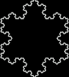
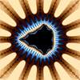
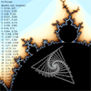
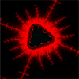

Fractals
I have endeavored to write these applets in order to better understand the nature of fractals.
A tree fractal, good for visualizing the concept of infinite complexity stemming (literally) from a single simple "function". In this applet, you can modify the recursive rule in terms of the angle of branching and the size ratio between successive branches.
The Koch Curve. This curve when iterated infinitely is continuous but nowhere differentiable, has a finite area but and infinite perimeter. With particular settings, the tree fractal can achieve the same shape of the Koch Curve. Click here to see it.
The Mandlebrot set; the iterative function Zn = Z(n+1)^2 + C mapped on the complex plane. Z is initially zero, and C is the point from which you start. In this example applet, the function is iterated 90 times for each pixel (each pixel represents a point on the complex plane, which is C in the function above.) The color is defined by how many iterations it takes for the new Z point to go further than 2 away from the origin. (is can be mathematically proven that once the point goes outside this bound, it will always go off to infinity. In this case, the point is not "in the set") If Z does not go outside this bound after 90 iterations, it is assumed that it will never go off to infinity, and it is deemed "in the set" and colored black. fractal explorer explains fractals very well.
This applet shows you what the computer is doing and where the iterations of the function go. when you move your mouse, it draws lines between the successive points given by iterating the function. Very interesting things happen inside the set towards the edges and inside the knobs. It looks like the knobs arise when the iterations loop back on themselves and form a "stable" geometric shape, and inside the knobs there are variations on that shape.
This is the function Zn = (Z(n+1)^2 + C)^2, which gives a totally different shape than Z(n+1)^2 + C.